Jupyterlab
Jupyterlabの使い方
sshでログインしてpythonを実行できますが、Jupyter NoteBookおよびJupyter labは、豊富なリソースを利用し、WebブラウザからPythonを実行できます。また、画像やグラフなどを簡単に表示できデータ分析などに役立ち大変便利です。また、拡張機能のプラグインを取り込むことで機能を増やしたり、簡単に文章表現できるMarkDown記法にも対応しております。jupyter labは、jupyter notebookを進化させています。
インストール
1 2 3 | |
エラーが出た場合
1 2 | |
jupyter labを起動
1 | |
ipアドレスをしらべる。Wifiで接続する場合は、wan0の項目のIPアドレス
1 | |
Jetson Nanoにアクセス
パソコンのブラウザ（Chrome,Firefox）アドレスバーに上記でしらべてIPアドレスを192.168.0.****と入力します。
※お使いの環境によります。
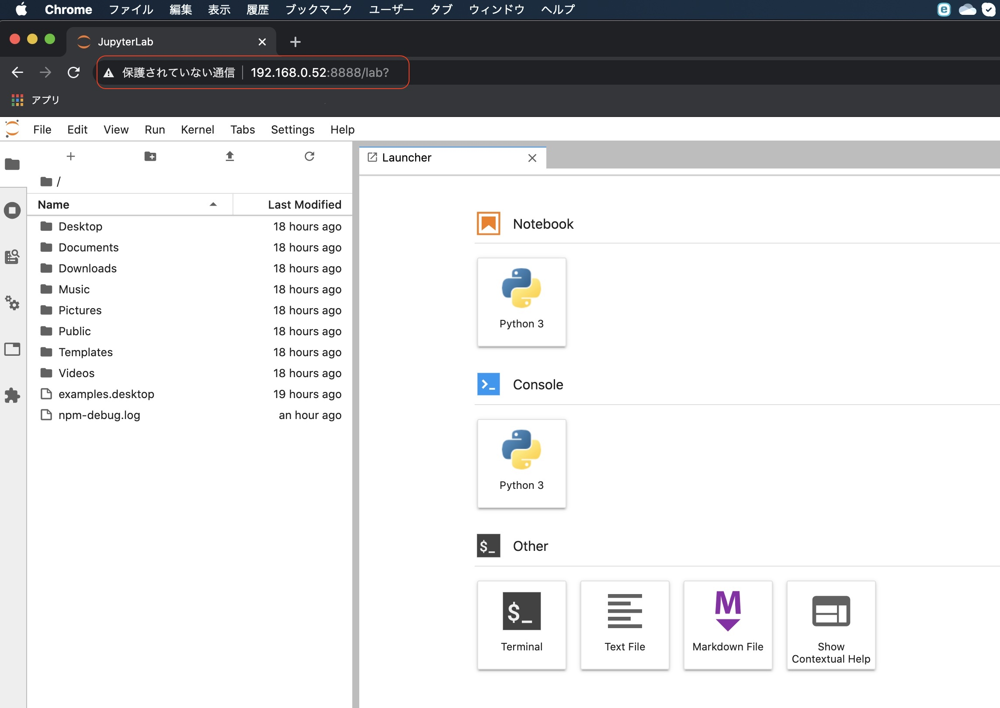
python3のコードを記述する。
python3を選ぶ。
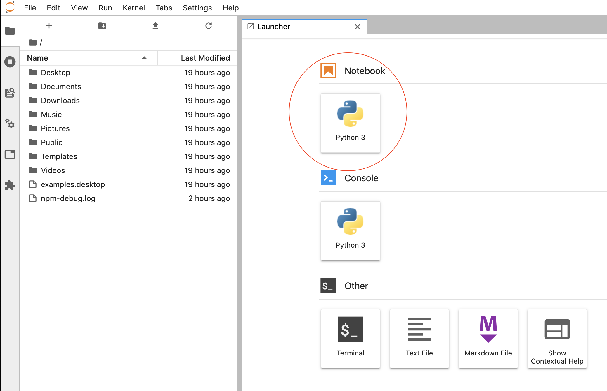
すると1つのセルが現れます。
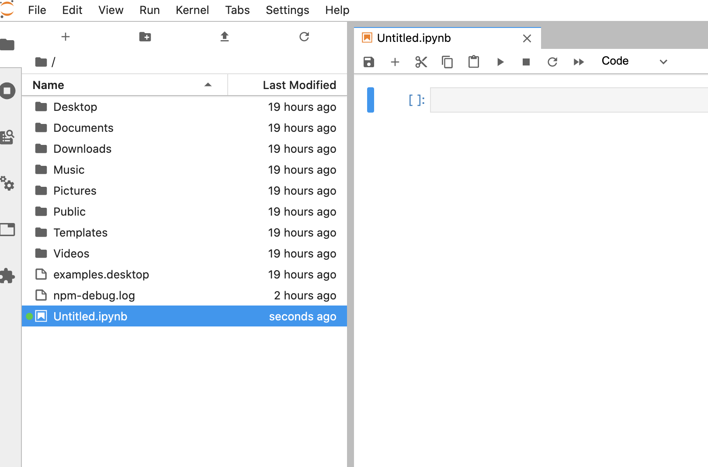
renameを選択肢ファイルに名前をつけます。サンプルとしてhelloworld.ipynbと名前をつけます。
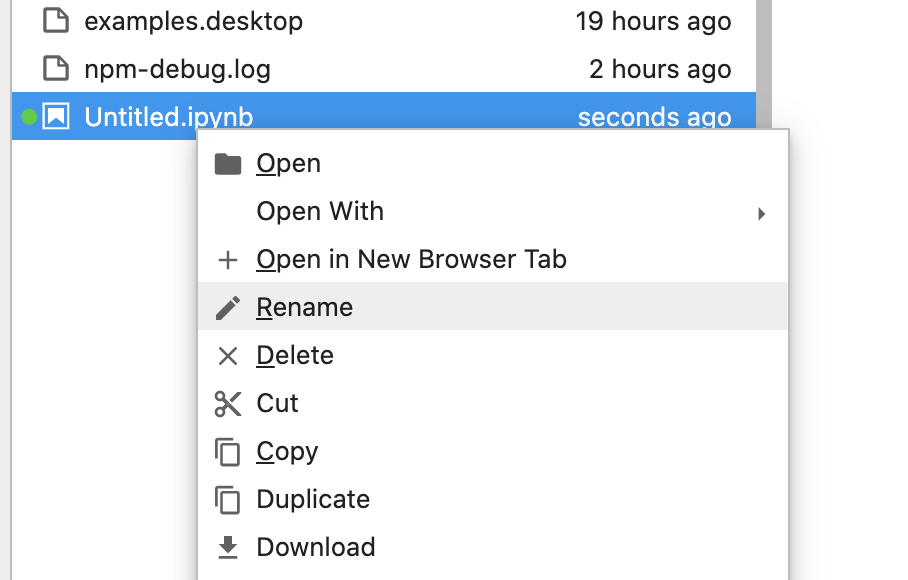
セルに以下の１行コードを入力します。
1 | |
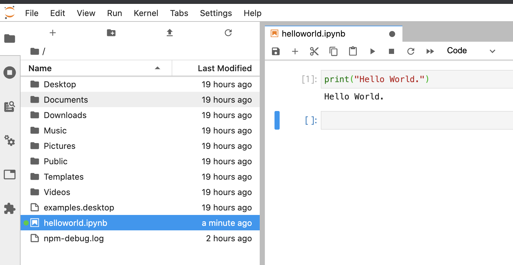
入力し終わったら、上の横三角マークするとクリックすると Hello World. と表示することができたと思います。
ループなど停止する場合は、四角ボタンをクリックします。
グラフを表示させる
左上にある+ボタンを押して、Lancherのタブにて、terminalを選択します。
つぎのパッケージをインストールします。
1 | |
1 | |
1 | |
y ＝ ２x ＋ １ の一次関数を描画する
1 2 3 4 5 6 7 8 | |
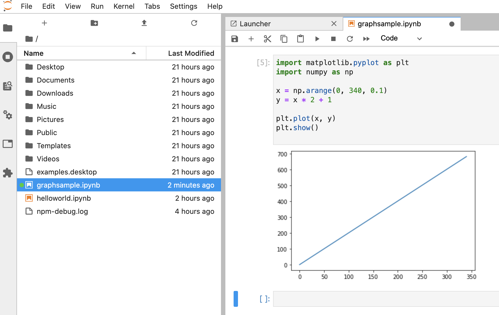
Markdownの記述方法
タブ内の＋ボタンを押して、セルを追加します。Code->Markdownに変更します。 そのセルの中に ## グラフの描画 １次関数と入力します。
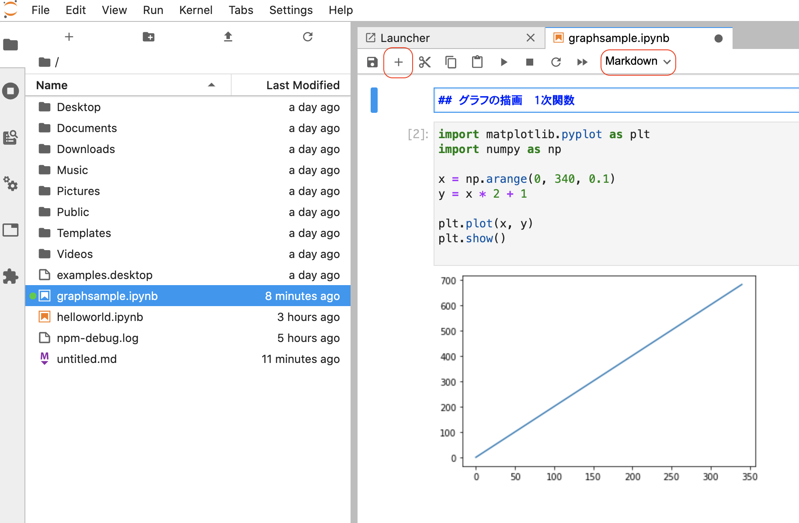
Shiftキー + enterキーを押すとマークダウンのテキストとして入力されコメントアウトよりも表現豊かに表記ができます。
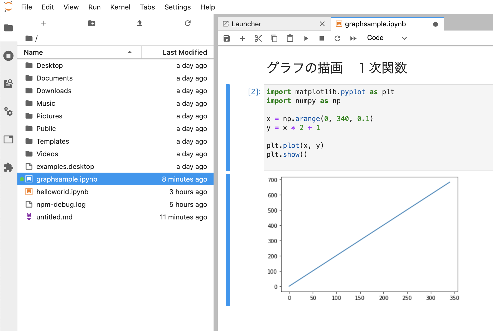
数式をマークダウンで表記
関数など綺麗な文字を表現すること可能です。
セルを追加して、Markdownを選択して入力
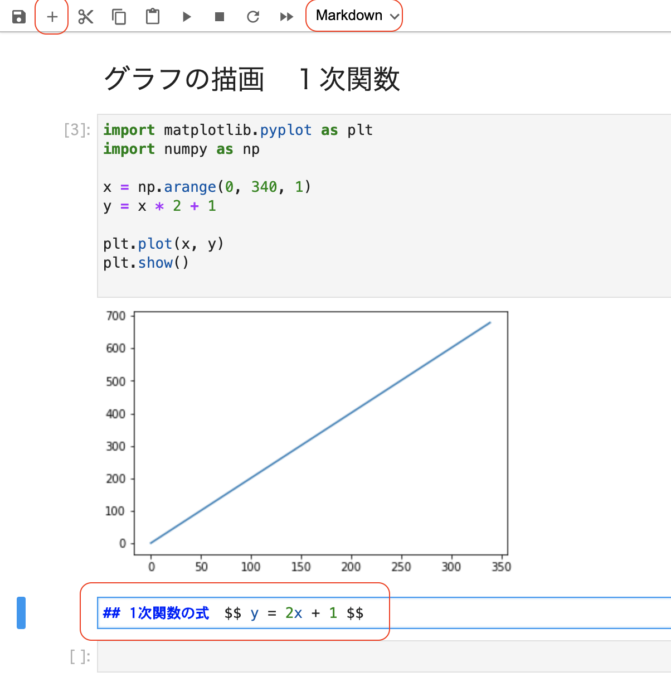
1 | |
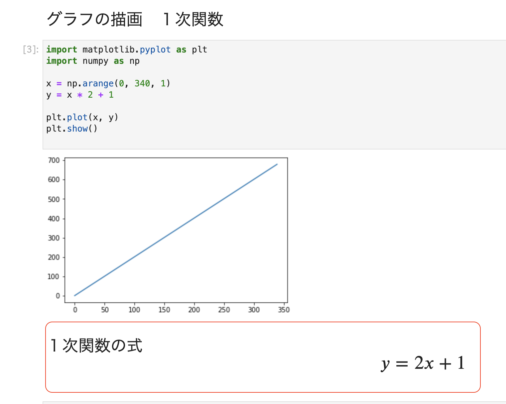
三角関数の例
1 2 3 4 5 6 7 8 | |
1 | |
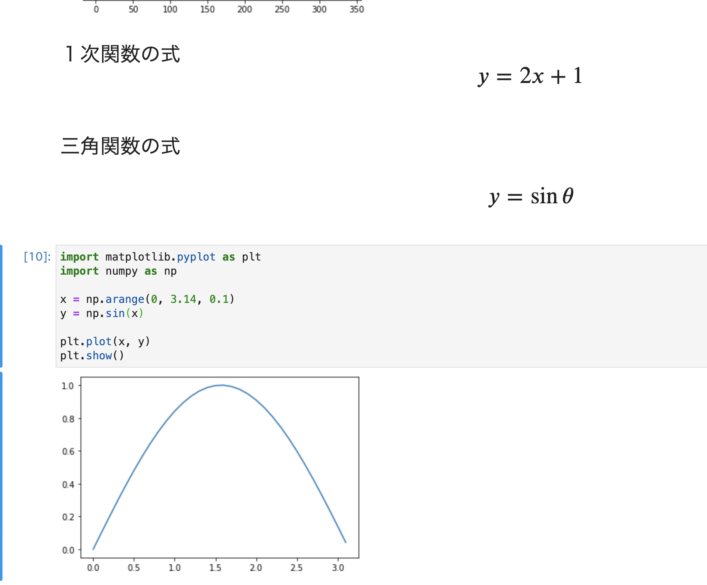
Markdown記法のくわしい情報は、help->Markdown Referenceに記載されています。
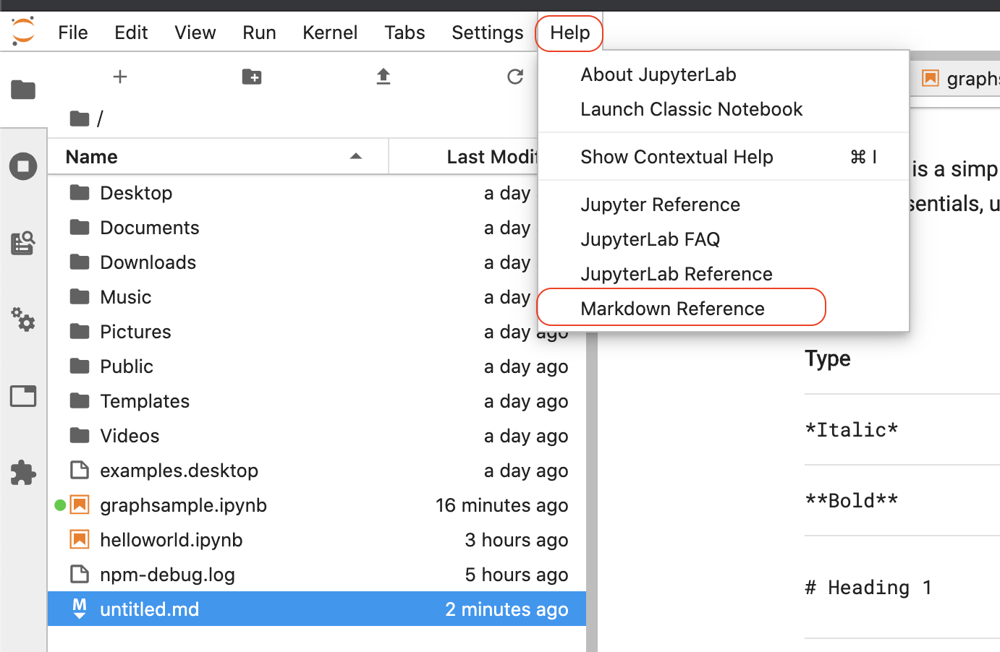
行番号の表記
viewからshow Line Numbersを選択
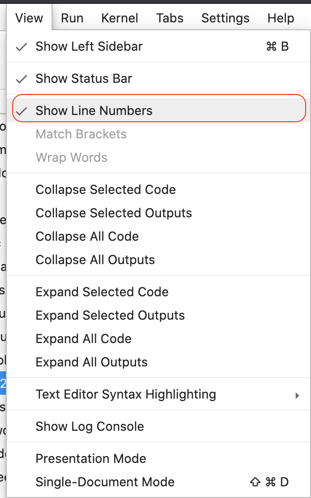
ファイルのアップロード
SCPコマンドなどをつかうことなくファイルをアップロードします。
〜工事中写真〜
ファイルのダウンロード
〜工事中写真〜
プラグイン
〜工事中〜